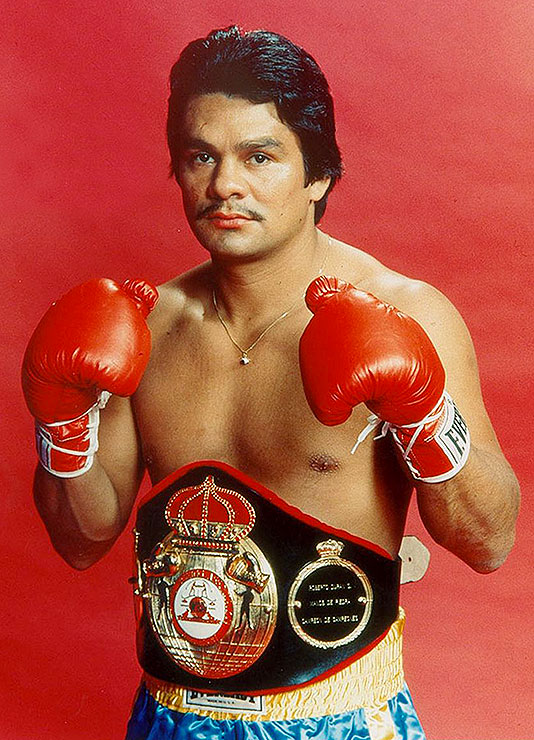
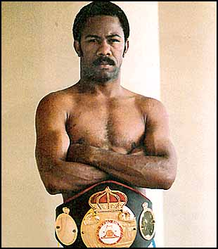
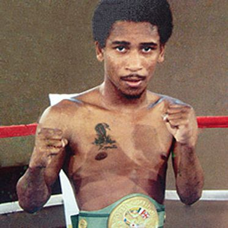
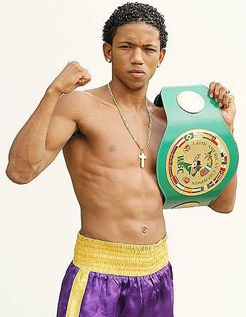
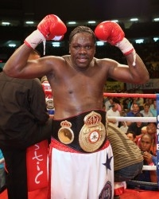
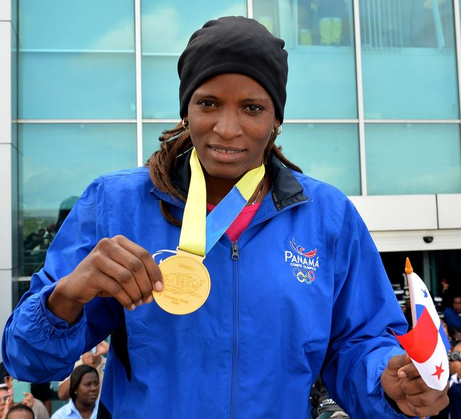

Hall of Fame Panameño
Seis campeones que llevaron el boxeo panameño a lo más alto. Toca cada tarjeta para conocer sus logros, estilos y legado.
⌄
Roberto Durán
“Mano de Piedra” · 4 divisiones
Campeón Mundial
Ligero
Wélter

Roberto Durán es sinónimo de garra y técnica. Su agresividad inteligente y su defensa interior marcaron una era. Desde los ligeros hasta los medianos, su nombre impuso respeto en cada ring, construyendo una de las carreras más admiradas de la historia del boxeo.
Mejores logros
Campeón mundial en cuatro divisiones, reinados históricos en peso ligero, victorias memorables ante Sugar Ray Leonard y muchos más.
Estilo
Presión constante, combinaciones al cuerpo, pasos cortos y cintura elástica. Capacidad para cortar el ring y forzar peleas de corto alcance.
Récord
119 peleas, 103 victorias (70 KO), 16 derrotas. Carrera profesional desde 1968 hasta 2001.
Legado
Considerado uno de los mejores ligeros de todos los tiempos; símbolo de la identidad panameña y del boxeo latinoamericano.
Datos biográficos
Nacimiento: 16/06/1951 · Debut profesional: 23/02/1968 (16 años) · Fallecimiento: —
⌄
Eusebio Pedroza
Pluma · Reinado largo
Campeón Mundial
Peso pluma
Defensas consecutivas

Dueño de un jab educado y gran timing, Pedroza defendió el título mundial de peso pluma en numerosas ocasiones. Su inteligencia en el ring y condición física lo convirtieron en una referencia de consistencia y elegancia.
Mejores logros
Campeón mundial AMB de peso pluma con un prolongado número de defensas exitosas a lo largo de los años 80.
Estilo
Boxeador técnico: manejo de distancia, jab constante y recursos para amarrar y reiniciar cuando era necesario.
Récord
Más de 40 victorias, destacando defensas titulares; reconocido por su durabilidad y orden táctico.
Legado
Uno de los grandes campeones pluma de la historia; ejemplo de profesionalismo y temple.
Datos biográficos
Nacimiento: 02/03/1956 · Debut profesional: 02/09/1973 (17 años) · Fallecimiento: 01/03/2019 (cáncer de páncreas)
⌄
Hilario Zapata
Mini mosca / Mosca ligero
Campeón Mundial
Defensa y ángulos

Maestro del movimiento y el contragolpe. Zapata mostró un boxeo fino, basado en el desplazamiento y el cálculo, capaz de neutralizar rivales más fuertes con ritmo y precisión.
Mejores logros
Campeonatos mundiales en divisiones pequeñas; victorias ante rivales de alto nivel en escenarios internacionales.
Estilo
Movilidad, fintas y contraataques certeros. Gran lectura de las entradas del oponente.
Récord
Más de 40 victorias profesionales con amplia experiencia en pleitos titulares.
Legado
Referente del boxeo técnico panameño en pesos chicos; inspiración para estilistas modernos.
Datos biográficos
Nacimiento: 19/08/1958 · Debut profesional: 1977 (19 años) · Fallecimiento: —
⌄
Ricardo Córdoba
Súper gallo
Campeón Mundial
Súper gallo

Disciplinado y con oficio, Córdoba construyó su camino a la faja mundial con técnica y sacrificio. Representó a Panamá con orgullo en escenarios exigentes.
Mejores logros
Título mundial en peso súper gallo y defensas internacionales ante contendientes difíciles.
Estilo
Orden táctico, combinaciones rectas y manejo de distancia para imponer su plan de pelea.
Récord
Más de 35 victorias profesionales, incluyendo triunfos relevantes por título.
Legado
Ejemplo de constancia para nuevas generaciones; mostró que el trabajo silencioso rinde frutos.
Datos biográficos
Nacimiento: 11/10/1983 · Debut profesional: 2000 (16–17 años) · Fallecimiento: —
⌄
Guillermo Jones
Crucero
Campeón Mundial
Peso crucero

Físico imponente y gran alcance. Jones impuso su pegada y jab para dominar la división crucero, dejando actuaciones de autoridad en el panorama mundial.
Mejores logros
Título mundial crucero, con victorias sólidas frente a rivales europeos y latinoamericanos.
Estilo
Boxeador de largo alcance: jab insistente, control del centro del ring y potencia en ambas manos.
Récord
Más de 40 peleas profesionales; campeón lineal reconocido en la categoría.
Legado
Demostró que Panamá también puede producir campeones en categorías pesadas con técnica y condición.
Datos biográficos
Nacimiento: 05/05/1972 · Debut profesional: 1993 (21 años) · Fallecimiento: —
⌄
Atheyna Bylon
Medallista mundial · Boxeo femenino
Campeona Mundial (AIBA)
Elite femenina

Pionera del boxeo femenino panameño en el máximo nivel, Bylon demostró técnica, disciplina y valentía al conquistar el oro mundial y representar a Panamá en torneos internacionales, inspirando a nuevas generaciones de deportistas.
Mejores logros
Oro en el Campeonato Mundial AIBA, múltiples medallas continentales y participaciones en Juegos Panamericanos y Olímpicos.
Estilo
Boxeo técnico, control de distancia y combinaciones veloces. Sólido juego de piernas y lectura del rival.
Récord
Amplia trayectoria en el circuito amateur élite, con victorias destacadas frente a campeonas continentales y mundiales.
Legado
Figura clave del boxeo femenino panameño; ejemplo de perseverancia que abre puertas a más niñas y jóvenes en el deporte.
Datos biográficos
Nacimiento: 06/04/1989 · Debut internacional: 2014 (25 años) · Fallecimiento: —
Honor, disciplina y campeones para siempre